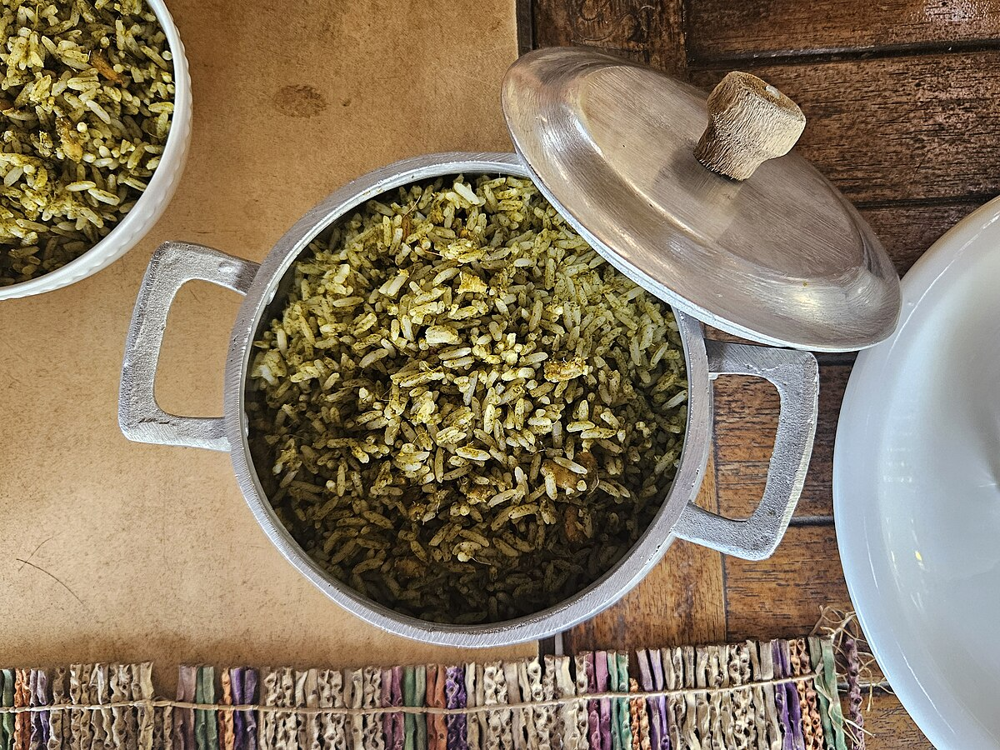

Arroz de Cuxá
Sobre a Receita
O Arroz de Cuxá é uma das receitas mais tradicionais do Maranhão e um verdadeiro símbolo da culinária local. levemente ácido e muito aromático, que representa a identidade e a riqueza cultural do povo maranhense.

🧾 Ingredientes
- 3 maços de vinagreira (ou azedinha, se preferir)
- 2 xícaras (chá) de arroz
- 4 colheres (sopa) de farinha de mandioca
- 3 colheres (sopa) de gergelim torrado
- 3 colheres (sopa) de camarão seco
- 3 dentes de alho picados
- 1 cebola média picada
- 3 colheres (sopa) de azeite ou óleo
- Sal e pimenta-do-reino a gosto
- Suco de ½ limão (opcional, para realçar o sabor ácido)
👨🍳 Modo de Preparo
- Cozinhe o arroz normalmente e reserve.
- Lave as folhas de vinagreira, retire os talos e cozinhe-as em água fervente até ficarem macias. Escorra e pique bem.
- Em uma frigideira grande, toste o gergelim até dourar levemente e reserve.
- Em uma panela, aqueça o azeite e refogue o alho e a cebola até ficarem dourados.
- Adicione o camarão seco e refogue por 2 a 3 minutos.
- Acrescente a vinagreira picada e misture bem.
- Junte o gergelim e a farinha de mandioca, mexendo até formar um molho espesso.
- Adicione o arroz cozido e misture até incorporar todos os sabores.
- Ajuste o sal e a pimenta. Se quiser, adicione um pouco de suco de limão para intensificar o sabor.
⏱️ Preparo
45 minutos
🔥 Tempo de refogamento
10 a 15 minutos
🕒 Total
aproximadamente 1 hora
🍘 Rendimento
cerca de 3 a 5 pessoas
💰 Custo Médio
aproximadamente R$ 50